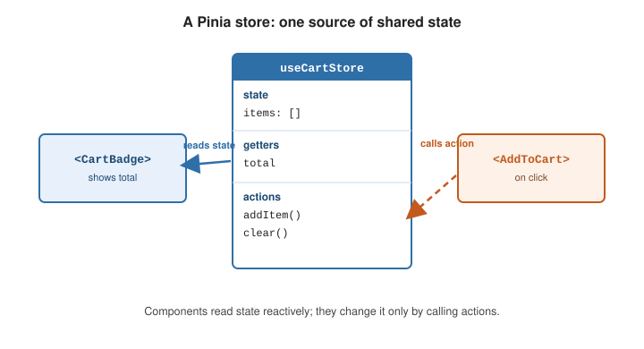

State Management
|
This content was generated with the assistance of AI and should be verified against the official documentation before being relied on in production. |
State management is about state that several components need to read and change. Vue’s reactivity APIs can hold such state on their own for small cases; Pinia is the official library once it grows. The trade-offs are laid out in State Management.
A store from the reactivity APIs
A shared reactive object in a module is already a working store — any component that imports it sees the
same instance and re-renders when it changes:
// stores/counter.js
import { reactive } from 'vue'
export const counter = reactive({
count: 0,
increment() {
this.count++
},
})<script setup>
import { counter } from '@/stores/counter'
</script>
<template>
<button @click="counter.increment()">{{ counter.count }}</button>
</template>This works, but nothing stops a component from writing counter.count = -5 directly, there is no naming
convention for many stores, no DevTools timeline, no plugin hook, and server-side rendering needs care to
avoid sharing one instance across requests. Pinia adds all of that.
Where state should live
Before choosing a tool, decide where each piece of state belongs. The question is always "who needs to read or change this?":
component only?"} one -->|yes| local["local ref / reactive
in that component"] one -->|no| tree{"Shared by a parent
and its children?"} tree -->|yes| props["lift it to the parent,
pass props down, events up"] tree -->|no| deep{"Needed deep in
one subtree?"} deep -->|yes| inject["provide / inject"] deep -->|no| app{"App-wide, survives
navigation, needs DevTools?"} app -->|yes| pinia["Pinia store"] app -->|no| mod["module-level reactive
(simple store)"]
A server response that several views reuse (a list of tasks, a user profile) is server state, not client state: it has loading, error and staleness concerns of its own. A Pinia action that fetches and caches it works for a small app; larger apps often delegate it to a data-fetching library and keep Pinia for genuinely client-side state such as filters and preferences.
Closing the write door
The simple store’s weakness is that any component can assign to it. Exposing a readonly() view and a few
named mutations restores the one-way flow without a library; Vue warns (and ignores the write) if a consumer
tries to assign:
// stores/counter.ts
import { reactive, readonly } from 'vue'
const state = reactive({ count: 0 })
export const counter = {
state: readonly(state), // consumers can read, not write
increment() { state.count++ },
}This is the same shape as a Pinia store, minus plugins, DevTools and SSR safety — which is exactly the line at which to switch.
Global state vs. props and provide/inject
Reach for a store only for state that is genuinely app-wide — the signed-in user, a cart, feature flags. Prefer passing data down as props for parent-to-child flow, and Provide / Inject for handing a value to a deep subtree without a store. A store is the right tool when unrelated parts of the tree read and write the same data.
Pinia
Install Pinia and register it once:
import { createApp } from 'vue'
import { createPinia } from 'pinia'
import App from './App.vue'
createApp(App).use(createPinia()).mount('#app')defineStore: setup stores vs. option stores
defineStore(id, ...) returns a use function. A setup store is a function that looks like <script
setup> — ref is state, computed is a getter, functions are actions:
// stores/cart.js
import { ref, computed } from 'vue'
import { defineStore } from 'pinia'
export const useCartStore = defineStore('cart', () => {
const items = ref([])
const total = computed(() => items.value.reduce((s, i) => s + i.price, 0))
function addItem(item) {
items.value.push(item)
}
function clear() {
items.value = []
}
return { items, total, addItem, clear }
})An option store passes an object with state, getters, and actions instead — closer to Vuex and to
the Options API:
export const useCartStore = defineStore('cart', {
state: () => ({ items: [] }),
getters: { total: (state) => state.items.reduce((s, i) => s + i.price, 0) },
actions: {
addItem(item) { this.items.push(item) },
clear() { this.items = [] },
},
})state must be a function so each app (and each SSR request) gets a fresh object. See
Defining a Store.
Using a store in a component
Call the use function inside setup. The returned store is reactive; access properties directly for
templates, but use storeToRefs() to destructure state and getters without losing reactivity (actions can
be destructured directly):
<script setup>
import { storeToRefs } from 'pinia'
import { useCartStore } from '@/stores/cart'
const cart = useCartStore()
const { items, total } = storeToRefs(cart) // stay reactive
const { addItem, clear } = cart // actions: plain to destructure
</script>
<template>
<p>{{ items.length }} items — {{ total }}</p>
<button @click="clear">Empty cart</button>
</template>Mutating and observing a store
-
store.$patch({ ... })orstore.$patch(state => { ... })— apply several state changes as one transaction (cheaper, and one DevTools entry). -
store.$reset()— restore the initial state (option stores only; a setup store must define its own reset action). -
store.$subscribe((mutation, state) => { ... })— run a callback after every state change, e.g. to persist tolocalStorage. -
store.$onAction(({ name, args, after, onError }) => { ... })— hook every action call, withafterandonErrorfor its outcome.
const cart = useCartStore()
cart.$patch((state) => {
state.items.push(newItem)
state.coupon = null
})
cart.$subscribe((_mutation, state) => {
localStorage.setItem('cart', JSON.stringify(state.items))
})Plugins
A Pinia plugin is a function registered with pinia.use(); what it returns is merged onto every store, and
it can also wrap actions or add subscriptions. This is how persistence, router access, or shared HTTP
clients are attached:
pinia.use(({ store }) => {
store.$subscribe(() => {
localStorage.setItem(store.$id, JSON.stringify(store.$state))
})
})Plugins documents the full context object.
DevTools, HMR, and SSR
-
DevTools — with Vue DevTools installed, Pinia adds a panel with each store’s state, a timeline of patches and actions, and time-travel.
-
HMR — add
import.meta.hotglue so editing a store file keeps its current state:if (import.meta.hot) { import.meta.hot.accept(acceptHMRUpdate(useCartStore, import.meta.hot)) } -
SSR — because
stateis a factory, each request gets its own stores; serializepinia.state.valueinto the HTML and hydrate it on the client. See SSR and Server-Side Rendering.

Worked example: the task store
The running example is a task list. The store owns the list and the active filter, derives what is visible,
and loads the initial data. It is written as a setup store, so the whole thing reads like a <script setup>
block:
// src/stores/tasks.ts
import { ref, computed } from 'vue'
import { defineStore } from 'pinia'
export interface Task { id: number; title: string; done: boolean }
export type Filter = 'all' | 'open' | 'done'
export const useTaskStore = defineStore('tasks', () => {
const tasks = ref<Task[]>([])
const filter = ref<Filter>('all')
const loading = ref(false)
const visible = computed(() =>
tasks.value.filter(t =>
filter.value === 'all' ? true : filter.value === 'done' ? t.done : !t.done))
const openCount = computed(() => tasks.value.filter(t => !t.done).length)
function add(title: string) {
const id = tasks.value.reduce((m, t) => Math.max(m, t.id), 0) + 1
tasks.value.push({ id, title, done: false })
}
function toggle(id: number) {
const t = tasks.value.find(t => t.id === id)
if (t) t.done = !t.done
}
async function load() {
loading.value = true
try {
const res = await fetch('/api/tasks')
tasks.value = await res.json()
} finally {
loading.value = false // runs on success and on failure
}
}
function $reset() { // setup stores have no automatic $reset
tasks.value = []
filter.value = 'all'
}
return { tasks, filter, loading, visible, openCount, add, toggle, load, $reset }
})Everything a component or another store may touch is in the return object; anything not returned is private.
The information flows in one direction, which is what makes the store easy to reason about and to debug:
(click, input)"] -->|calls| act["action
add / toggle / load"] act -->|mutates| st["state
tasks, filter"] st -->|derives| get["getters
visible, openCount"] get -->|read by| ui st -->|read by| ui act -.->|"$onAction"| dt["DevTools,
logging, plugins"] st -.->|"$subscribe"| dt
Observing the store
$patch with a function groups related changes into one mutation; $subscribe then sees one event for the
group and $onAction sees every action with its outcome:
const tasks = useTaskStore()
tasks.$subscribe((mutation, state) => {
console.log(mutation.type, state.tasks.length) // 'patch function' once, not twice
})
tasks.$onAction(({ name, after, onError }) => {
after(() => console.log(`${name} finished`))
onError((error) => console.error(`${name} failed`, error))
})
tasks.$patch((state) => {
state.tasks.push({ id: 9, title: 'Review', done: false })
state.filter = 'open'
})
await tasks.load()Stores that use other stores
A store may call another store’s use function inside a getter or action (never at module top level, where no Pinia is active yet). Avoid two stores reading each other during setup, which creates a circular dependency; read the other store lazily inside an action instead:
// src/stores/settings.ts
import { defineStore } from 'pinia'
import { useTaskStore } from './tasks'
export const useSettingsStore = defineStore('settings', {
state: () => ({ hideDone: false, pageSize: 20 }),
getters: {
visibleCount(): number {
const tasks = useTaskStore()
return this.hideDone ? tasks.openCount : tasks.tasks.length
},
},
actions: {
toggleHideDone() { this.hideDone = !this.hideDone },
},
})A persistence plugin
A plugin runs once per store. This one restores saved state when a store is created and writes it back on
every mutation. detached: true keeps the subscription alive when the component that first used the store is
unmounted:
// src/stores/persist.ts
import type { PiniaPluginContext } from 'pinia'
export function persistPlugin({ store }: PiniaPluginContext) {
const key = `pinia:${store.$id}`
const saved = localStorage.getItem(key)
if (saved) store.$patch(JSON.parse(saved))
store.$subscribe((_mutation, state) => {
localStorage.setItem(key, JSON.stringify(state))
}, { detached: true })
}// src/main.ts
import { createApp } from 'vue'
import { createPinia } from 'pinia'
import App from './App.vue'
import { persistPlugin } from './stores/persist'
const pinia = createPinia()
pinia.use(persistPlugin)
createApp(App).use(pinia).mount('#app')Plugins are applied when the Pinia instance is installed in an app with app.use(pinia); in a unit test that
builds a bare createPinia() and never installs it, plugins do not run. Tests that need them create an app
first (createApp({}).use(pinia)). See Testing for testing stores and components that
use them.
Choosing a store style
| Option store | Setup store | |
|---|---|---|
State |
|
|
Getters |
|
|
Actions |
|
plain functions |
|
built in |
you write it |
Composables |
not directly |
use any composable inside, |
Best for |
teams that like the Options API shape, simple stores |
logic that composes or needs watchers |
Either style produces the same store at the call site, so the choice can differ store by store.
Vuex is legacy
Vuex was the previous official store. It is in maintenance mode and the Vue team recommends Pinia — effectively Vuex 5 — for all new projects.
See also
-
Pinia documentation — full API, testing guide, and recipes.
-
Provide / Inject — dependency injection for a subtree, without global state.
-
Routing — a common Pinia plugin target (
store.$router). -
State Management and Signals — comparable approaches in other frameworks.